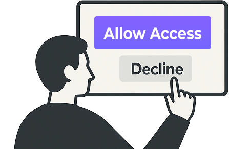

Autonomy means that people have the right to
make their own decisions.
In the context of ICT and research, this mainly refers to how people can choose what happens to their personal information — like their name, email, location, or opinions.
When someone participates in a project or uses a digital product, they should always have a real choice: